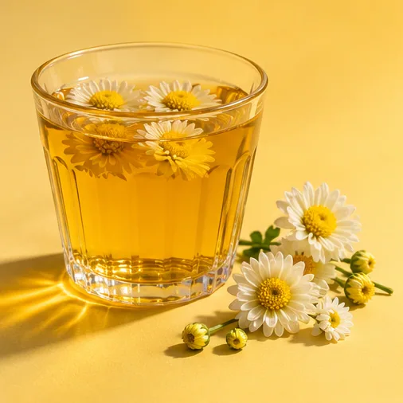
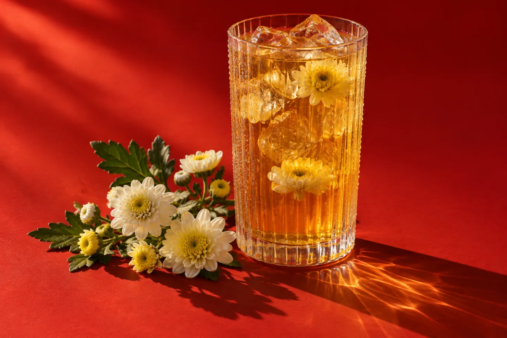

Tea
Chrysanthemum Tea
A floral brew made with Hang Bai Ju chrysanthemums.
Pack sizes for Chrysanthemum Tea
250 mL carton · 300 mL can · 380 mL and 1.5 L bottles
Official product pageSingapore beverage guide
From floral chrysanthemum tea to rose-tinted bandung, discover six drinks in Yeo’s Singapore collection.
Explore the drinks

Tea
A floral brew made with Hang Bai Ju chrysanthemums.
250 mL carton · 300 mL can · 380 mL and 1.5 L bottles
Official product page
Soy
Whole soy beans give this classic drink its smooth texture.
250 mL carton · 300 mL can · 380 mL bottle · 1 L carton
Official product page
Asian drinks
Sweet lychee flavour in a light fruit drink.
250 mL carton · 300 mL can · 380 mL and 1.5 L bottles
Official product page
Tea
Brewed from the first tea buds of the spring harvest.
250 mL carton · 300 mL can · 380 mL and 1.5 L bottles
Official product page
Soy
A blend of whole soy beans and black soy beans.

Asian drinks
Rose essence gives this milk drink its distinct floral character.
250 mL carton · 300 mL can · 380 mL bottle
Official product pageBrand story
In 1901, Yeo Keng Lian started a soy sauce business in Zhangzhou, Fujian. In the 1930s his family brought the business to Nanyang. Soy bean milk and other Asian drinks would follow.
Read Yeo’s history